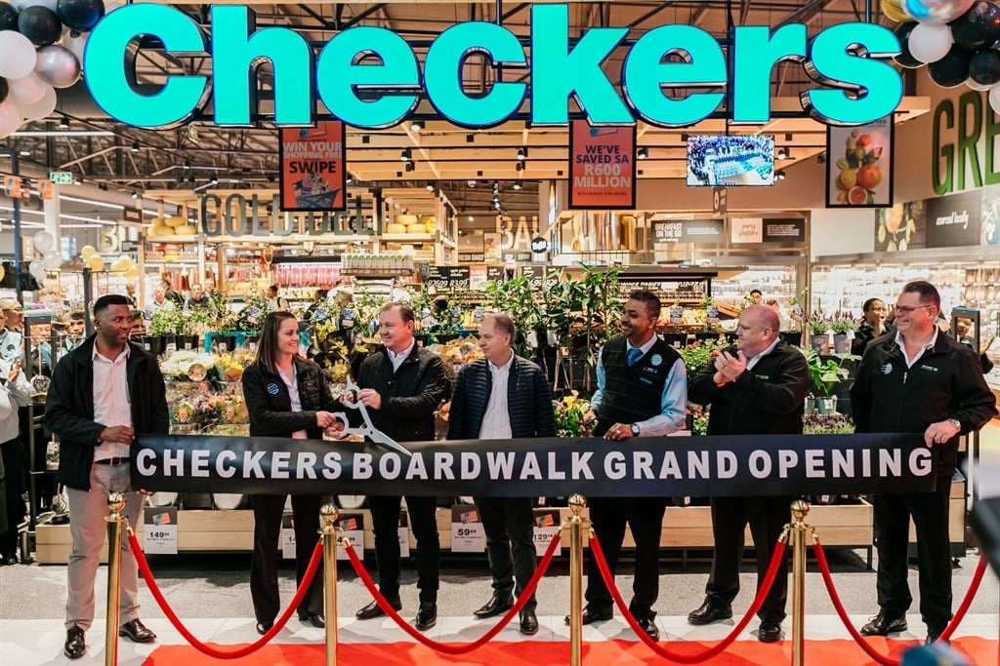
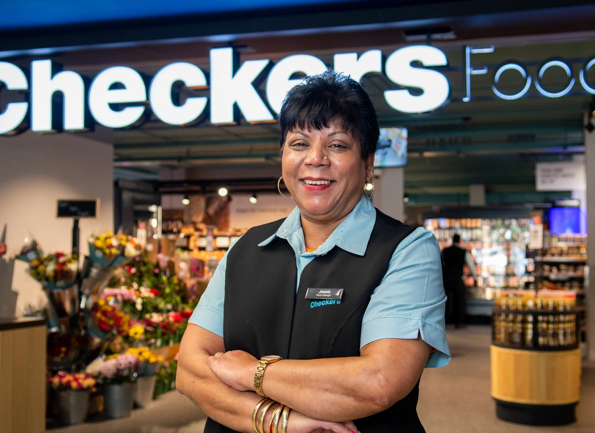
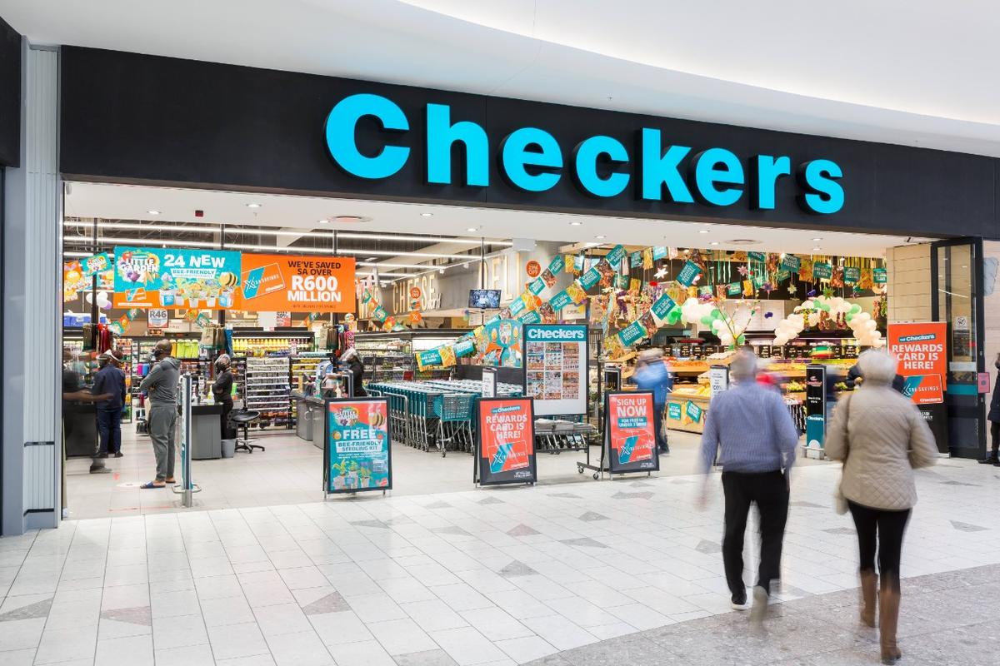

Contact
+27 011 821 4722
Email: checkers@gmail.co.za

Checkers is more than just a supermarket - it's a community hub where neighbors come together to connect, share stories, and forge lasting bonds. Whether you're catching up with friends over a cup of coffee in our café or attending one of our community events, you'll always find a sense of belonging at Checkers.

Directions
You can find Shoprite (Shop 205) after Starbucks Coffee Shop (Shop 204) in Food Market Avenue. Enjoy your dining adventure at Pine City Mall!